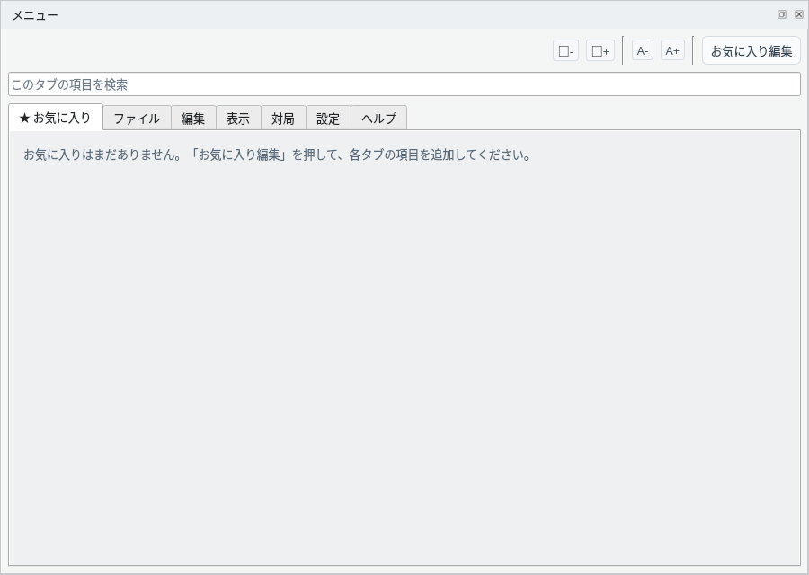
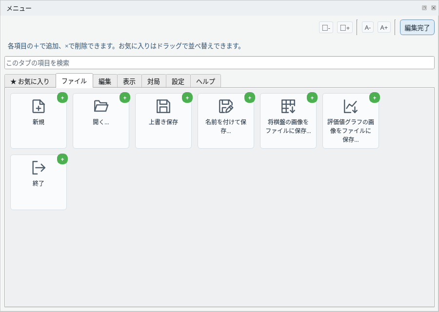
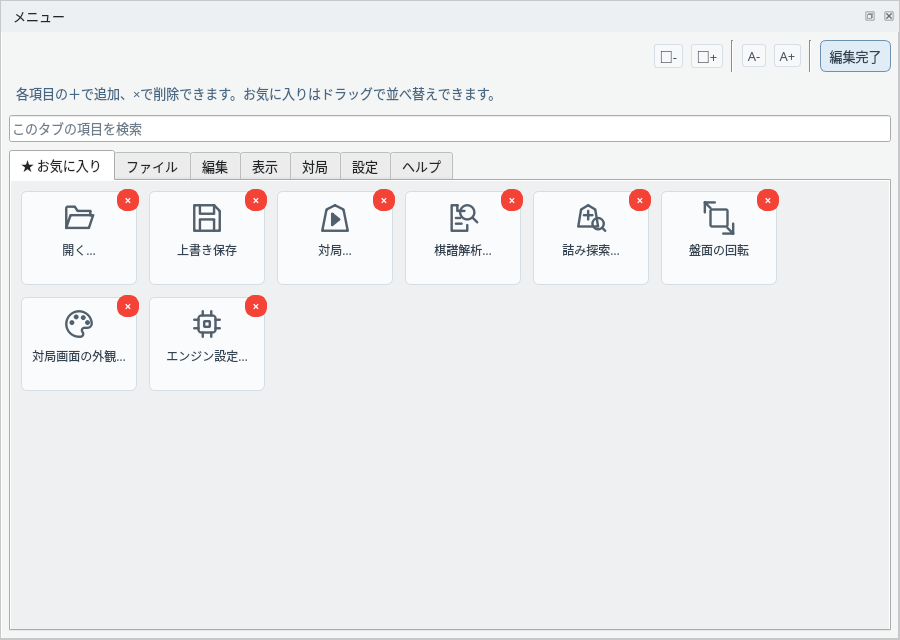
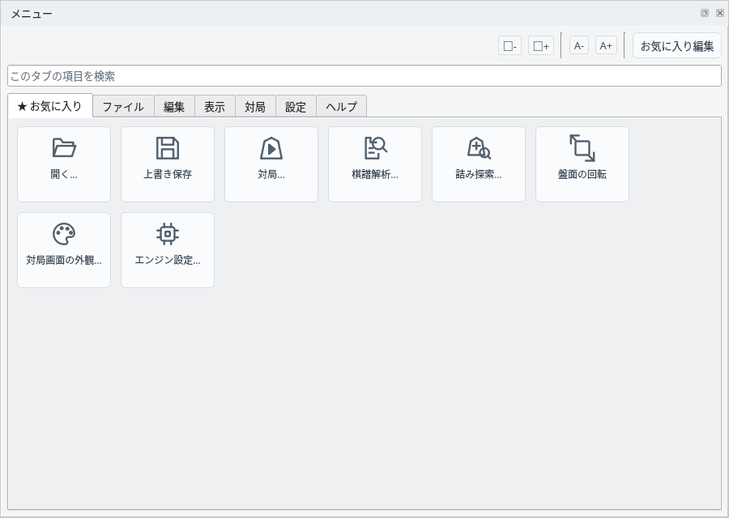

メニュードックで各種操作にすばやくアクセス
よく使う機能をお気に入りにまとめて、すばやく使えます
「★ お気に入り」タブには、登録した項目が表示されます。最初は何も登録されていないため、案内だけが表示されます。

お気に入りタブ：未登録の状態
右上の「お気に入り編集」を押すと編集が始まり、ボタンは「編集完了」に変わります。各タブの項目の右上に緑色の「+」が表示され、押すとその項目がお気に入りに追加されます。

お気に入り編集中：「+」で追加
編集中にお気に入りタブを開くと、登録済みの項目の右上に赤い「×」が表示され、押すとお気に入りから削除できます。項目をドラッグすると並べ替えられます。終わったら「編集完了」を押します。

お気に入り編集中：「×」で削除、ドラッグで並べ替え
登録した項目は「★ お気に入り」タブにまとめて表示されます。よく使う機能を登録しておくと、タブを切り替えずにすぐ使えます。

登録した項目がお気に入りタブに表示される